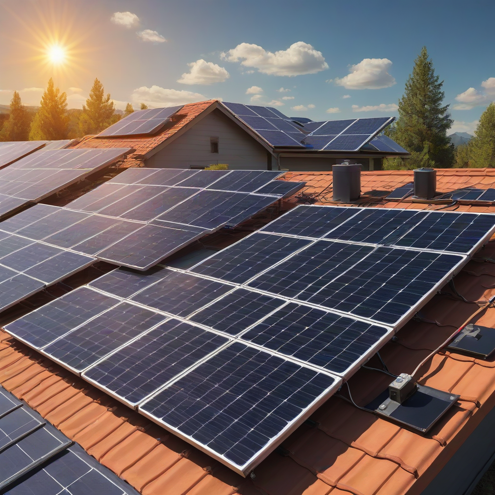
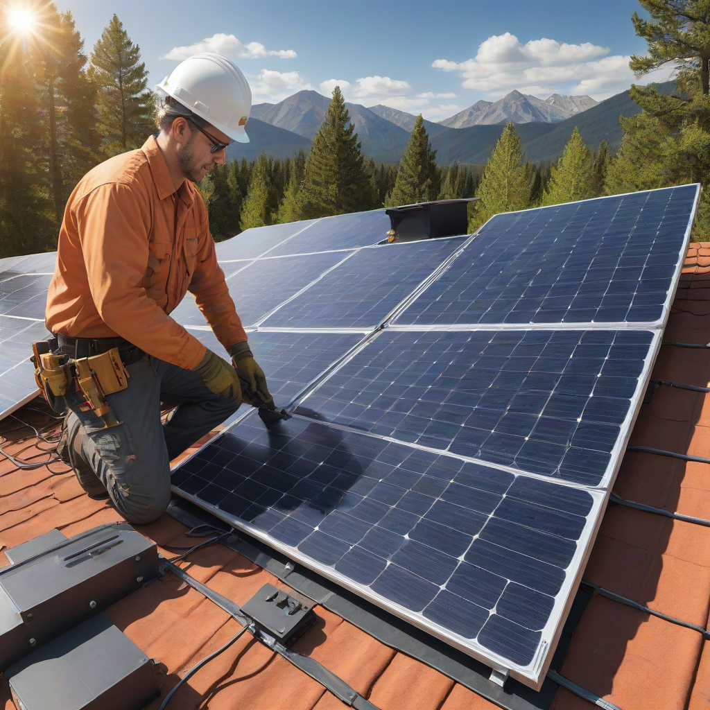

If you’re considering a DIY solar panel installation to cut costs and gain energy independence, you’re in good company—over 180,000 U.S. homeowners attempted DIY solar in 2025 alone. But here’s the hard truth: every year, fire departments respond to over 200 solar-related electrical fires, many linked to improper DIY work. The good news? With the right safety knowledge, you *can* install solar confidently and legally. This comprehensive 2026 guide cuts through the hype and gives you actionable, code-compliant safety steps—so your project powers your home without risking your family’s well-being.
Whether you’re adding a small off-grid shed system or going full grid-tie with battery backup, safety isn’t optional—it’s foundational. Federal incentives like the 30% Investment Tax Credit (ITC) make solar more affordable than ever, but they also mean stricter permitting and inspection requirements. This guide walks you through safety protocols, real 2026 pricing, regional cost variations, and how to avoid the top 5 DIY mistakes that cause insurance denials.
What Is DIY Solar Panel Installation Safety Guide?

Definition
A DIY solar panel installation safety guide is a structured set of protocols, tools, and best practices designed to prevent injury, fire, and system failure during home solar projects. It covers electrical safety, fall prevention, structural integrity, and compliance with the National Electrical Code (NEC) and local building codes.
How It Works
Simply put: you design, source, and install solar equipment yourself—*but only after* rigorously following safety standards. Here’s how it unfolds:
- Design phase: Use tools like Aurora Solar or PVWatts to model your system size, orientation, and shading.
- Permitting: Submit plans to your local building department (required in all 50 states).
- Installation: Mount racking, panels, wiring, and inverters—*with power OFF at the main panel*.
- Inspection & commissioning: A licensed inspector verifies code compliance before utility interconnection.
Key Components
- UL-listed solar panels and inverters
- DC disconnects and rapid shutdown devices (NEC 690.12)
- Conduit and wire sizing per NEC Table 310.16
- Personal Protective Equipment (PPE): voltage-rated gloves, arc-flash face shield, non-conductive tools
- Grounding equipment (grounding lugs, bare copper wire)
Why Homeowners Care
Ignoring

Cost Breakdown
Typical Costs (2026)
DIY solar eliminates labor costs (which typically make up 40–60% of system price), but safety gear and code-compliant parts still add up. Here’s a 6 kW system cost estimate:
Regional Differences & 2026 Pricing
Costs vary significantly by state due to labor rates, incentives, and permitting fees. Below are 2026 averages for a *fully compliant* DIY 6 kW system (panels, inverter, racking, electrical parts only—*not* batteries):
| Region | Panel Cost ($/watt) | Inverter + Racking ($) | Permit & Inspection Fees ($) | Total Estimated Cost |
|---|---|---|---|---|
| California | $2.80–$3.50 | $1,200–$1,800 | $300–$700 | $10,200–$14,200 |
| Texas | $2.50–$3.00 | $1,000–$1,500 | $150–$400 | $8,400–$11,500 |
| Northeast (NY, MA) | $3.00–$3.80 | $1,400–$2,000 | $400–$900 | $12,000–$16,500 |
| Midwest (IL, OH) | $2.60–$3.20 | $1,100–$1,600 | $200–$500 | $9,000–$12,800 |
Budget Planning
- Use the 30% federal ITC: Reduces your net cost by up to $4,350 on a $14,500 system (2026 credit applies to *equipment + installation* even if DIY).
- Include hidden costs: Safety gear ($200–$500), conduit/wiring upgrades ($300–$800), and contingency fund (10% of total).
- Apply for local rebates: Check DSIRE.org for state-specific incentives.
Key Factors to Consider
Location
- Roof type: Tile or slate roofs require specialized mounting hardware (+$200–$500) and extra caution to avoid leaks.
- Climate: High-wind zones (e.g., Florida, Gulf Coast) need wind-load certified racking and torque specifications.
- Grid access Grid-tied? You’ll need utility approval and a bi-directional meter. Off-grid? You’ll need battery storage.
Usage Patterns
How you use electricity directly affects your system size—and safety considerations:
What Affects Cost & Safety
- Peak demand: High appliance loads (e.g., AC, EV charging) require larger inverters and heavier wiring—overheating is a top fire cause.
- Shading: Partial shading on panels creates DC hot spots. Use microinverters or power optimizers (NEC requires rapid shutdown).
- Future expansion: Design for +20% capacity headroom to avoid unsafe panel overloading later.
How to Compare Systems
- Get 3 quotes (even for DIY) using tools like EnergySage.
- Verify components are UL 1703 (panels), UL 1741 (inverters), and NEC 2023 compliant.
- Compare warranty terms: Tier-1 brands (e.g., Tesla, Enphase, Canadian Solar) offer 25-year product + performance warranties.
Practical Tips and Fixes
Immediate Actions
Before flipping a single switch:
- De-energize the main panel—lockout/tagout (LOTO) procedure required.
- Use a multimeter to confirm zero voltage in all circuits.
- Install conduit before wiring—NEC 2023 mandates protection from physical damage.
- Ground everything: Panels, racking, inverter, and battery (if present).
Long-Term Savings
Quick Wins
- Monitor daily: Use Enphase App or SolarEdge Monitoring to catch voltage deviations early.
- Clean panels quarterly: Dirt reduces output by 5–15%—use deionized water to avoid scratches.
- Tighten connections annually: Thermal cycling loosens terminals (fire risk!).
When to Upgrade
- After 10 years: Inverters rarely last 25+ years—budget for replacement ($1,000–$3,000).
- Adding battery storage: Tesla Powerwall costs $11,500–$15,500 installed; Enphase IQ Battery ranges $4,000–$8,000 (per module, 2026).
Frequently Asked Questions
Can I really install solar myself?
Yes—if you have experience working with live AC/DC electrical systems. If you’ve never wired a subpanel or changed a 240V breaker, hire a licensed installer. The NREL 2026 DIY Solar Report shows DIY systems have a 3x higher inspection failure rate than pro-installs when safety steps are skipped.
What’s the #1 safety mistake DIYers make?
Skipping rapid shutdown. NEC 690.12 requires DC voltage to drop to ≤30V within 30 seconds during grid outages or firefighter intervention. Most failures occur when installers use string inverters without microinverters or optimizers.
Do I need a permit for a small DIY system?
Yes—even for 1–2 kW shed systems. All 50 states require electrical and building permits for grid-tied solar. Unpermitted work voids insurance and blocks future home sale. Check your city’s online portal for streamlined solar permits (e.g., San Diego, Austin, and Denver offer same-day digital approval).
How do I pass the electrical inspection?
Follow these 5 steps:
- Mount panels ≥12" from roof edge (firefighter access requirement).
- Use UV-resistant conduit (EMT or PVC) for all exposed wiring.
- Label all breakers, disconnects, and grounding points per NEC 210.5.
- Include a site plan showing panel layout and utility disconnect location.
- Bring your UL certification documents for every component.
What PPE is non-negotiable?
- Class 0 voltage-rated gloves (500V AC/750V DC)
- Insulated tool set (VDE-certified)
- Hard hat + ANSI Z87.1 safety glasses
- Non-slip, closed-toe boots (rooftop falls cause 40% of solar injuries)
My system failed inspection—what now?
Don’t guess—review the inspector’s written notice. Common fixes:
- Missing grounding lugs on racking (add UL-listed clamps)
- Wirenuts used outdoors (replace with waterproof connectors)
- Lack of rapid shutdown label on inverter (print NEC-mandated labels)
Most cities offer a re-inspection fee of $0–$100—just correct and resubmit.
Conclusion
A safe DIY solar installation delivers maximum value: lower costs, energy independence, and increased home value—*if* you respect the safety protocols that protect people and property. Use this 2026 guide to plan, install, and inspect with confidence.
Action Items
- Download the NEC Article 690 checklist from DOE’s National Solar Testing Lab.
- Run your numbers with the free PVWatts Calculator (NREL).
- Call your local AHJ (Authority Having Jurisdiction) *before* buying parts—confirm permitting rules.
- Buy safety gear first—never compromise on PPE or UL-listed components.
Your solar future starts not with panels—but with safety. Install smart, inspect clean, and power on.